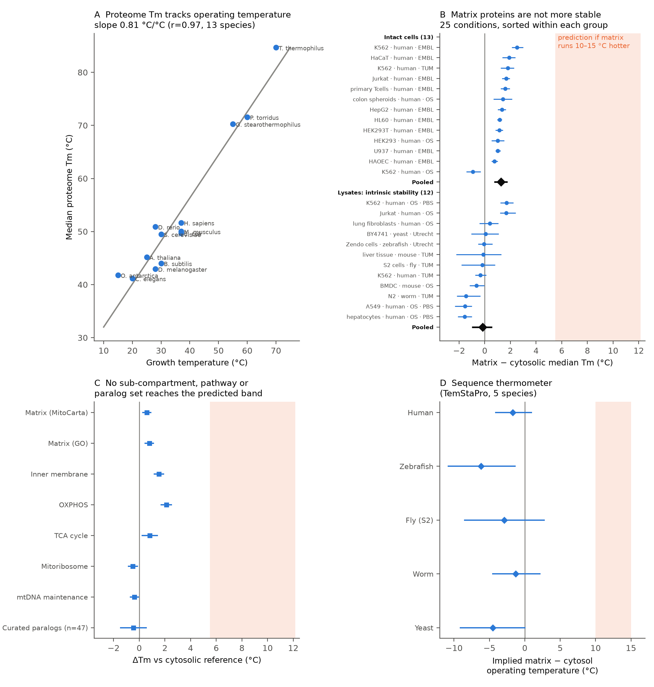

Mitochondrial matrix proteins carry no signature of a 50 °C environment
A probe-independent test of the "hot mitochondria" hypothesis using public thermal-proteome data, and a proposed one-experiment resolution
In one paragraph. Chrétien et al. (2018) and Terzioglu et al. (2023) reported that the mitochondrial matrix sits at ~50 °C, 10–15 °C above the cytosol, as a steady state. Across 13 species, median proteome melting temperature (Tm) rises ~0.55–0.81 °C per °C of growth temperature. A matrix that is permanently 10–15 °C hotter should therefore have proteins melting ~5–12 °C above their cytosolic neighbours. Reanalysing the Meltome Atlas (62 datasets, 4 labs, 6 eukaryotic species, 126,176 Tm measurements), we find matrix − cytosol ΔTm = −0.17 °C in lysates (intrinsic stability; 95% CI −1.00 to +0.58) and +1.26 °C in intact cells (+0.72 to +1.77). Same-family mitochondrial/cytosolic paralog pairs show no difference. A protein-language-model thermostability predictor shows no heat-adaptation signature in any of five species. A persistently hot matrix is compatible with these data only if an unobserved, matrix-specific, non-intrinsic stabilisation worth ~5–12 °C exists. We propose a single TPP experiment (respiration on vs off in intact cells) that would decide between the two pictures.
Why this question
The hot-mitochondria claim remains openly contested in 2025–2026: critiques recommending rejection (Treberg & Mailloux 2026, Acta Physiol; Tkachenko et al. 2026 preprint), defences (Fahimi, Lynch & Matta 2026, BioEssays; Rustin et al. 2025, TIBS), and neutral reviews calling it "a matter of intense debate" (Beignon et al. 2026). Every existing measurement uses a fluorescent or diamond thermometer with known confounders (membrane potential, binding, pH, extrapolated calibration). Physics objects to the size of the gradient (the "105 gap"), though a 2026 study reports that intracellular heat dissipates non-diffusively over seconds, reopening that argument (Takarada et al. 2026, Nat Commun). What has been missing is a test that relies on neither the probes nor heat-transfer theory: whether the matrix proteins themselves show the adaptation a hot environment would select for.
Key results
| Test | Matrix − cytosol | 95% CI | Prediction if matrix is +10–15 °C |
|---|
| Lysates: intrinsic stability (12 conditions) | −0.17 °C | −1.00, +0.58 | +5.5 to +12 |
| Intact cells (13 conditions) | +1.26 °C | +0.72, +1.77 | +5.5 to +12 |
| Non-mammals: worm, fly S2, zebrafish, yeast | −0.41 °C | −1.33, +0.34 | +5.5 to +12 |
| 47 curated mito/cyto paralog pairs (human) | −0.45 °C | −1.51, +0.60 | +5.5 to +12 |
| Sequence thermometer (TemStaPro/ProtT5), human | −1.7 °C* | −4.2, +1.0 | +10 to +15* |
| Inner-membrane proteins: lysates / intact cells | +0.18 / +2.2 °C | −1.2, +1.7 / +1.4, +2.8 | +5.5 to +12 |
| Respiratory chain (OXPHOS) subunits: lysates / intact cells | +1.1 / +2.8 °C | −0.6, +2.5 / +1.9, +3.9 | +5.5 to +12 |
| Mitoribosome / mtDNA maintenance | −0.5 / −0.4 °C | both < 0 | +5.5 to +12 |
*Implied operating-temperature difference. Positive control passes: human proteins read hotter than worm, fly, fish and yeast orthologs. 0 of 5 species show matrix > cytosol. For the lysate result to be consistent with +10 °C, the Tm–temperature coupling would need to be <0.06 (observed 0.55–0.81; species bootstrap P ≤ 0.006).

A Proteome Tm vs growth temperature, 13 species. B Matrix − cytosol ΔTm in 25 conditions (cell · species · lab), grouped by intact cells / lysates; diamonds = pooled. C Alternative definitions, sub-compartments, pathways, paralogs. D Sequence thermometer, five species. Orange bands = prediction for a 10–15 °C hotter matrix.
What is new relative to prior work
The closest prior work is Jacobs et al. 2024 (FEBS J, by the hypothesis's proponents). In a supplementary analysis of intact K562/Jurkat TPP data they noted mitochondrial proteins are ~2 °C more stable than the proteome median and read this as support. We agree with the observation and add:
- The expected effect size. Calibrated across 13 species, a 10–15 °C hotter compartment predicts +5–12 °C, not +2. The matrix median Tm (~51 °C) would sit at the claimed operating temperature, i.e. zero safety margin, unlike any organism measured.
- Intrinsic vs environmental split. In lysates the gap is ~0. The small in-cell gap is environmental, not sequence adaptation.
- Within-family control (47 curated paralog pairs, localisation-verified).
- An assay-independent line: sequence-encoded thermostability, with a positive control.
- Six species, four labs, including Drosophila S2 cells, in which hot mitochondria were also claimed.
Searches of PubMed, Europe PMC full text (~318 citing papers of Chrétien 2018), bioRxiv, arXiv and Google Scholar found no controlled proteome-wide, paralog or sequence-based test. Thermal profiling with respiratory inhibitors has been done only in lysates (Cheng et al. 2025) or isolated mitochondria (Rivera-Mejías et al. 2024), neither of which can detect a hot matrix.
Exact claim, and what it is not
Claim. The matrix proteome shows no intrinsic thermal adaptation relative to the cytosol (in measured stability, in same-family pairs, or in sequence-encoded signatures) across six species. A persistently 10–15 °C hotter matrix is therefore compatible with the data only if an unobserved matrix-specific, non-intrinsic stabilisation worth ~5–12 °C exists, or if probe-reported "temperature" is not a steady bulk temperature.
Not claimed. We did not measure mitochondrial temperature, and we don't claim an upper bound of 1–2 °C. The test concerns a steady excess (sustained over minutes to evolutionary time). It does not address transient, picosecond-scale heat spikes at the inner membrane (Fahimi, Lynch & Matta 2026), which would leave no imprint on protein stability; even proteins embedded in the inner membrane show no adaptation in lysates (table above). The inference assumes that the cross-species Tm–temperature coupling transfers, at least roughly, to compartments within a cell. This is the central stated assumption.
How the analysis was checked
- Replicated across 4 labs, 25 conditions, 6 species; no condition above +2.5 °C. Two independent matrix definitions (MitoCarta 3.0, GO).
- Uncertainty from a two-level bootstrap (gene clusters shared across all datasets and species, plus conditions). Calibration uncertainty propagated by species bootstrap. Censoring-aware rank test treating non-melters as most stable: P(matrix > cytosol) = 0.53.
- Non-human labels via strict one-to-one orthologs; paralog pairs hand-curated with localisation checks.
- Adversarial review by an independent AI model (OpenAI Codex). It found real errors (orthology, replicate pooling, CI construction, invalid pairs) and conceptual over-claims. All were fixed, and the headline was narrowed accordingly.
- The analysis was carried out with AI assistance (Anthropic's Claude). All code, inputs and intermediate outputs are available for inspection.
Limitations
- TPP Tm measures 3-min aggregation, not equilibrium unfolding. It is, however, the same measure used for the calibration.
- Intact-cell Tm is recorded in dish-temperature coordinates. If mitochondria were hot during heating, intact-cell values would be biased; hence our main inference rests on lysates, paralogs and sequence.
- Fly data are lysate-only; no bird or warm-bodied-fish meltome yet exists for a within-animal positive control.
Key references
Chrétien D et al. (2018) PLoS Biol 16:e2003992 · Terzioglu M et al. (2023) eLife 12:RP89232 · Jarzab A et al. (2020) Nat Methods 17:495 · Jacobs HT et al. (2024) FEBS J · Rath S et al. (2021) MitoCarta3.0, NAR 49:D1541 · Pudžiuvelytė I et al. (2024) TemStaPro, Bioinformatics · Treberg JR & Mailloux RJ (2026) Acta Physiol · Fahimi P et al. (2026) BioEssays · Baffou G et al. (2014) Nat Methods 11:899 · Lane N (2018) PLoS Biol 16:e2005113 · Savitski MM et al. (2014) Science 346:1255784 · Takarada M et al. (2026) Nat Commun 17:4215 · Rivera-Mejías P et al. (2024) bioRxiv 10.1101/2024.02.27.582308 · Tkachenko A et al. (2026) Research Square 10.21203/rs.3.rs-8744427/v1.
Proposed decisive experiment
Design. Thermal proteome profiling in intact cells in two states: respiring vs respiration blocked, the latter in two forms: antimycin A alone (membrane potential maintained by ATP-synthase reversal on glycolytic ATP; to be confirmed by TMRM) and antimycin A + oligomycin (potential collapses). Optional third arm: uncoupled (FCCP), which by the hypothesis's logic should be hotter still (UCP1 uncoupling increased the MTY "temperature" in Chrétien 2018). Cells: HEK293 or K562 (human), plus Drosophila S2. Standard 10-temperature TPP (37–67 °C), TMTpro or label-free DIA, 2 biological replicates.
Logic. TPP records the dish temperature at which each protein aggregates. If respiring mitochondria are 10 °C hotter than the dish, matrix proteins reach their true Tm at a dish temperature ~10 °C lower. Blocking respiration removes the excess, so matrix proteins (only) should appear ~5–10 °C more stable. Cytosolic proteins, at dish temperature in both states, serve as the internal control. If mitochondria are not hot, matrix and cytosolic proteins shift by the same small amount (<1–2 °C). The two outcomes differ by an order of magnitude more than TPP precision (~0.5 °C).
| Outcome | Matrix ΔTm (off − on) | Cytosol ΔTm | Interpretation |
|---|
| Hot mitochondria | +5 to +10 °C | ≈ 0 | Steady hot matrix confirmed, plus a large unknown protective mechanism to explain the lysate data |
| Not hot | ≈ cytosol (<1–2 °C) | ≈ 0 | Steady +10 °C matrix ruled out; probe signals have non-thermal components |
| FCCP arm (if hot) | more negative than "on" | ≈ 0 | Direction check: the effect should reverse sign |
Essential controls. Respirometry (Seahorse/Oroboros) confirming respiration is blocked and that ATP and viability are maintained over the ~1 h treatment. Membrane-potential readout (TMRM). Ligand-sensitive proteins whose Tm shifts with ATP/NADH flagged and analysed separately, since inhibitors change metabolite levels; the test statistic is the matrix-specific shift relative to cytosolic proteins with similar ligand sensitivity. Mitochondrial dysfunction can shift mitochondrial protein Tm non-thermally (Groh et al. 2023), so we also require the heat-only signature: a near-uniform shift across all matrix protein classes, plus a parallel lysate control. Loss of membrane potential itself destabilises matrix proteins (antimycin on isolated mitochondria: 299 of 893 proteins destabilised, mostly matrix; Rivera-Mejías et al. 2024). That effect runs opposite to the hot-matrix prediction, so the two "off" arms are compared to separate heat from membrane potential.
Scale. ~1–2 weeks of bench work for a lab running TPP. Roughly 60 MS runs (3 states × 2 replicates × 10 temperatures) per cell line. Indicative cost for a label-free pilot in India ≈ ₹3 lakh (~US$3.5k); a full TMT design ≈ ₹10–13 lakh (~US$12–15k).
What we are looking for
- A TPP lab to run (or co-design) the experiment; with co-authorship. We are open to discussing support for consumables and MS time.
- Mitochondrial physiologists, on either side of the debate, to sanity-check design and controls before data are collected. Pre-registering predictions jointly would make the result persuasive whichever way it falls.
- Critical reading of the reanalysis itself. We'd value being told where it is wrong.
What we can send
- Full technical report (methods, all numbers, verification ladder, review log): ~10 pages.
- Code and intermediate results: Python scripts reproducing every number from public data (Meltome Atlas, MitoCarta 3.0, UniProt, Alliance orthology, TemStaPro).
- A draft experimental protocol for the respiration on/off TPP with predictions written down in advance.